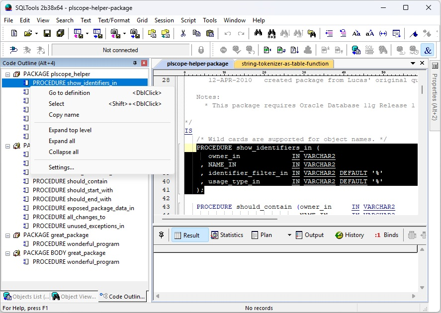

The Code Outline pane displays the structure of the active PL/SQL editor window as a tree. It updates automatically as you edit and lets you navigate directly to any item in the tree.

The outline shows the top-level program units in the file and, where applicable, their internal SELECT statements:
For SELECT, FROM, and WHERE items, a short snippet of the actual SQL text is shown next to the keyword to help identify the query at a glance.
Click any item in the outline tree to move the editor caret to that item. Double-click or press Enter to navigate and bring the editor into focus.
The current cursor position is tracked automatically: the tree highlights the item that contains the caret, so you always know where you are in the file structure.
SQLTools includes a feature that lets you jump between SQL statement keywords such as SELECT, FROM, WHERE, and PL/SQL constructs like IF / ELSE / END IF. It works similarly to how other editors let you navigate between matching braces { and } in C++.
Use Ctrl+] to jump to the next navigable keyword, and Shift+Ctrl+] to jump and select the entire block.
The editor also displays a syntax gutter showing the start and end of each navigable construct. This gutter is tied to the same navigation feature and is available whenever Ctrl+] navigation is enabled.
Right-clicking an item in the tree opens a context menu with the following commands:
A status strip at the bottom of the pane shows the current state of the outline:
The outline requires PL/SQL keyword navigation to be enabled (Editor → PL/SQL Outline settings). Without it both keyword navigation (SELECT/FROM/WHERE, IF/ELSE/END IF) and the outline pane are unavailable.
Keyword navigation
Master switch for PL/SQL keyword navigation and the outline pane. Must be on for the
outline to function.
Outline enabled
Turns the outline pane on or off independently of keyword navigation.
Show SELECT statements
When checked, top-level SELECT statements appear in the outline tree.
Uncheck to show only program units (packages, procedures, functions).
SELECT only (no FROM/WHERE)
When checked, only the SELECT leg label is shown for each query;
FROM and WHERE clause nodes are hidden. Subqueries are still shown.
Useful for keeping the tree compact when working with complex queries.
Max top-level items
Limits the number of top-level items in the outline. Useful for very large scripts
with many statements. Set to 0 for no limit.
Max lines / Max tokens
The background parser stops after this many lines or tokens have been processed.
If a limit is reached the status bar will indicate the outline may be incomplete.
Increase these values for very large files, keeping in mind that higher limits
mean longer parse times.